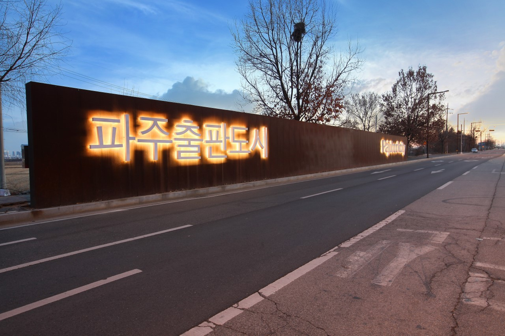

파주출판도시
이곳은 파주에 있는 파주출판도시예요.
제가 예전부터 자주 다녔던 장소이며, 이곳에는 유명한 '지혜의 숲'이라는 도서관이 있어요. 굉장히 규모가 크며, 웅장한 분위기를 자아내는 곳이에요.
저는 이곳 주변의 다른 소규모 책방, 그리고 중고서점 방문하기, 주변 산책하기를 좋아해요. 출판단지 내에 맛있는 양식집과, 책을 읽으며 베이커리를 즐길 수 있는 북카페들도 많아요.
따듯한 차 한 잔 옆에 두며 함께 책을 읽으면 그게 행복이죠!
아마 겨울이나 가을 같은 서늘한 계절에 방문하면 더욱 매력 있는 장소가 될 거예요.
나중에 꼭 한번 방문해 보시길 추천합니다.


유리섬박물관
이곳은 대부도에 있는 유리섬박물관이에요.
이곳에서는 이름에서부터 알 수 있듯, 유리과 관련된 공예품 전시를 주로 진행합니다. 또한 특색 있는 행사도 많이 진행하는데요.
유리 공접을 하는 모습을 바로 앞에서 감상할 수 있는 공연도 진행하며, 주변을 산책하며 자연 경관을 감상할 수도 있습니다.
개인적으로 제가 굉장히 좋아하는 장소인데요, 고즈넉한 풍경을 감상할 수 있음과 동시에 색다른 경험을 해 볼 수 있기 때문에 추천합니다.
사람이 많이 없는 시기에 방문하게 된다면 더욱 아늑하고 평온한 분위기를 즐길 수 있을 거예요.
이곳은 대부도에 있는 유리섬박물관이에요.
이곳에서는 이름에서부터 알 수 있듯, 유리과 관련된 공예품 전시를 주로 진행합니다. 또한 특색 있는 행사도 많이 진행하는데요.
유리 공접을 하는 모습을 바로 앞에서 감상할 수 있는 공연도 진행하며, 주변을 산책하며 자연 경관을 감상할 수도 있습니다.
개인적으로 제가 굉장히 좋아하는 장소인데요, 고즈넉한 풍경을 감상할 수 있음과 동시에 색다른 경험을 해 볼 수 있기 때문에 추천합니다.
사람이 많이 없는 시기에 방문하게 된다면 더욱 아늑하고 평온한 분위기를 즐길 수 있을 거예요.
인천아트플랫폼
이곳은 동인천에 위치한 인천아트플랫폼이에요.
이곳은 인천 차이나타운 내에 있는 복합문화공간이에요. 차이나타운은 익숙하지만, 이곳은 잘 모르시는 분들이 많으신데요.
다양한 전시와 문화공간, 도서관 등을 접해 볼 수 있는 장소랍니다.
이곳 또한 제가 좋아하는 장소 중 한 곳인데요. 옛스러운 주변 동인천의 분위기 사이 다양한 특색 있는 전시를 접하고 예술적 감각을 키워 볼 수 있는 곳이라는 점이 특성인 것 같습니다. 주변에 개항장거리, 박물관, 근대문학관 등 많은 볼거리 및 즐길 거리가 있으며 근처의 공원이나 '제물포구락부'라는 곳에서 정기적으로 진행하는 공연을 관람해 보는 것도 추천드립니다. 마음이 굉장히 편해지는 장소라고 말하고 싶어요.
이곳은 동인천에 위치한 인천아트플랫폼이에요.
이곳은 인천 차이나타운 내에 있는 복합문화공간이에요. 차이나타운은 익숙하지만, 이곳은 잘 모르시는 분들이 많으신데요.
다양한 전시와 문화공간, 도서관 등을 접해 볼 수 있는 장소랍니다.
이곳 또한 제가 좋아하는 장소 중 한 곳인데요. 옛스러운 주변 동인천의 분위기 사이 다양한 특색 있는 전시를 접하고 예술적 감각을 키워 볼 수 있는 곳이라는 점이 특성인 것 같습니다. 주변에 개항장거리, 박물관, 근대문학관 등 많은 볼거리 및 즐길 거리가 있으며 근처의 공원이나 '제물포구락부'라는 곳에서 정기적으로 진행하는 공연을 관람해 보는 것도 추천드립니다. 마음이 굉장히 편해지는 장소라고 말하고 싶어요.